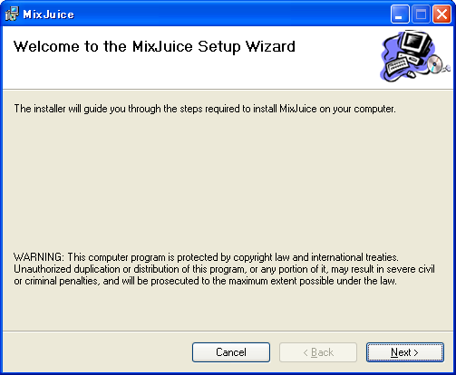
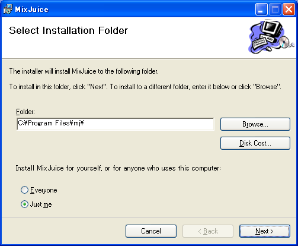
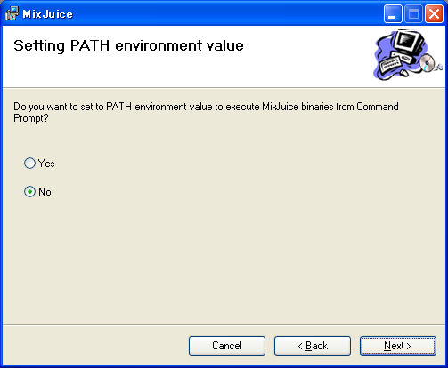
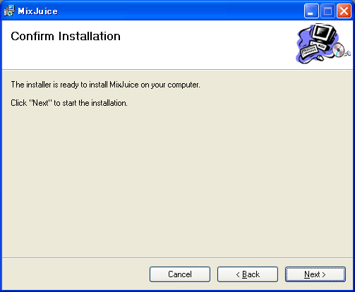
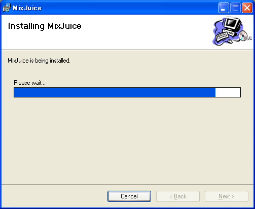
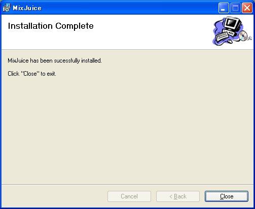
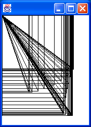
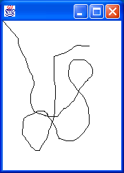
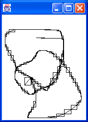

| ENGLISH | JAPANESE |
本ドキュメントは、MixJuice のインストール方法、環境設定および簡単な動作確認方法について記述したドキュメントです。
本ドキュメントは、浅海智晴氏作、SmartDocを使用して作成されています。
本リリースでは以下の環境をサポートします。
Windows 95/98/98SE/Me はサポートしません。
また、インストールを行うには、Windows Installer 2.0 があらかじめインストールされている必要があります。Windows 2000/NT SP6a 環境にて本リリースのインストールが行えない場合、つまり
mj.msiが実行可能ファイルとして認識されていない
加えて、MixJuice を使用するには、Java 環境が利用できる必要があります。
MixJuice のインストールを行うには、mj.msi をダブルクリックします。すると、以下のようなインストーラ画面が表示されます。

ここで、"Next" をクリックすると、インストールフォルダ選択画面が表示されます。

必要であれば、インストール先のフォルダを変更してください。インストールフォルダを決定したら、"Next" をクリックします。

ここでは、MixJuice の各種コマンドをコマンドプロンプト上から直接起動できるよう、MixJuice の bin ディレクトリをユーザー環境変数の PATH 環境変数に設定するかどうかを選択します。設定する場合は "Yes" を、設定しない場合は "No" を選択し、"Next" をクリックします。

インストールを行うための構成が終了しましたので、"Next" をクリックしてインストールを開始します。

インストールが完了すると、以下の画面が表示されます。

MixJuice のアンインストールを行うには、[コントロールパネル]→[プログラムの追加と削除]（Windows 2000/NT では [アプリケーションの追加と削除]） から MixJuice の削除を選択します。
インストール時に PATH 環境変数への追加を行った場合も、ユーザ環境変数から適切に値の削除が行われます。
ここでは、MixJuice に含まれる Draw サンプルを用いて簡単な動作確認を行います。
まず、MixJuice をインストールしたディレクトリ（以下、%MJ_HOME% と記述します）以下の sample\Draw ディレクトリを、ディレクトリごと適当な場所にコピーします。次に、コマンドプロンプトを開き、コピーしたディレクトリへ移動します。以後の作業はこのディレクトリ上で行うこととします。
なお、本節では Java 環境として Sun JDK を利用することを想定します（以下、JDK のインストールディレクトリを %JAVA_HOME% と記述します）。
%JAVA_HOME%\binをPATH環境変数に追加します。また、MixJuiceインストール時にPATH環境変数を設定していない場合には、%MJ_HOME%\binもPATH環境変数に追加してください。
%JAVA_HOME%\lib\classes.zipをCLASSPATH環境変数に追加する必要があります。mjc を用いてサンプルをコンパイルするには、コマンドプロンプトから以下のように実行します。
> mjc Draw.java Preprocessing phase. Compiling phase.
コンパイルに成功したら、mj を用いてモジュールを実行します。Draw.java には、drawモジュール、およびそれを継承したいくつかのモジュールが定義されていますが（詳細な解説はここでは行いません）、それらのうち box および dragPoint モジュールを個々に実行してみます。
> mj box

> mj dragPoint

MixJuice では複数の差分モジュールを組み合わせて実行することができます。以下のように、-s オプションを使用して上述の 2 モジュールを組み合わせて実行すると、次のような結果となります。
> mj -s box dragPoint

mjb を用いることで、複数のモジュールを 1 つのモジュールにまとめることができます。ここでは、上述 box モジュールと dragPoint モジュールをまとめて test という新しいモジュールを作成します。
> mjb test box dragPoint
作成した test モジュールを実行すると、図[box/dragPoint モジュールを組み合わせた実行結果]と同様な結果が得られます。
> mj test
MixJuice では、mj/mjc 等のプログラムを実行する際に使用する Java VM/Java コンパイラをユーザが設定できます。この設定を行うには、以下の環境変数に値を設定する必要があります。
| 環境変数名 | 意味 | 未設定時のデフォルト値 |
|---|---|---|
MJJAVA |
mj実行時に使用されるJava VM起動コマンド |
java |
MJJAVA_CP_OPT |
mj実行時に使用されるJava VM起動コマンドのクラスパスオプション |
-classpath |
MJCJAVA |
mjc/mjb実行時に使用されるJava VM起動コマンド |
java |
MJCJAVA_CP_OPT |
mjc/mjb実行時に使用されるJava VM起動コマンドのクラスパスオプション |
-classpath |
MJJAVAC |
mjc/mjb実行時に使用されるJavaコンパイラコマンド |
javac |
MJJAVAC_CP_OPT |
mjc/mjb実行時に使用されるJavaコンパイラコマンドのクラスパスオプション |
-classpath |
上記 *_CP_OPT 環境変数は、対になる環境変数に設定されたコマンドに合わせて適切に設定されている必要があります。例えば、Java コンパイラとして jikes を用いる場合には、以下のように設定します。
> set MJJAVAC=jikes > set MJJAVAC_CP_OPT=-classpath
※上記設定例では、mjc/mjb 実行時に jikes が実行できるよう、適切に PATH 環境変数が設定されている必要があります。